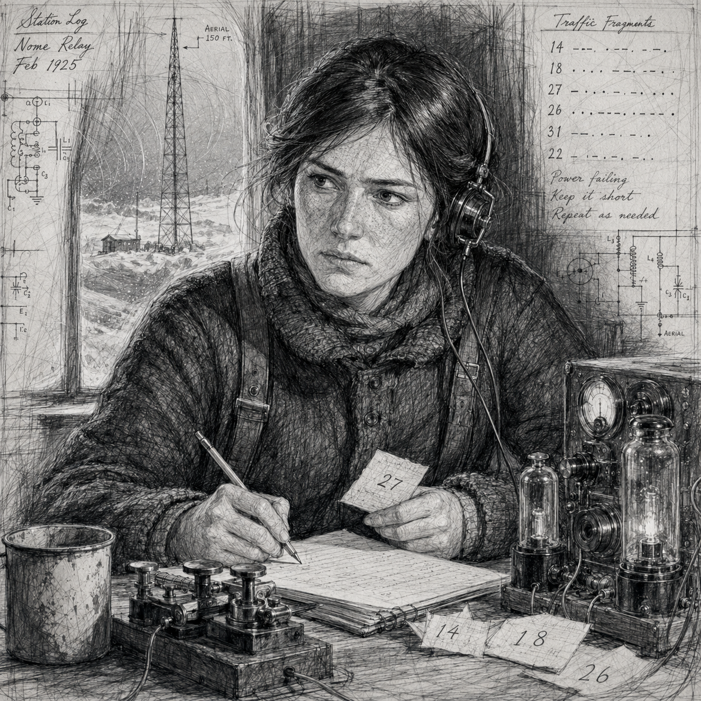
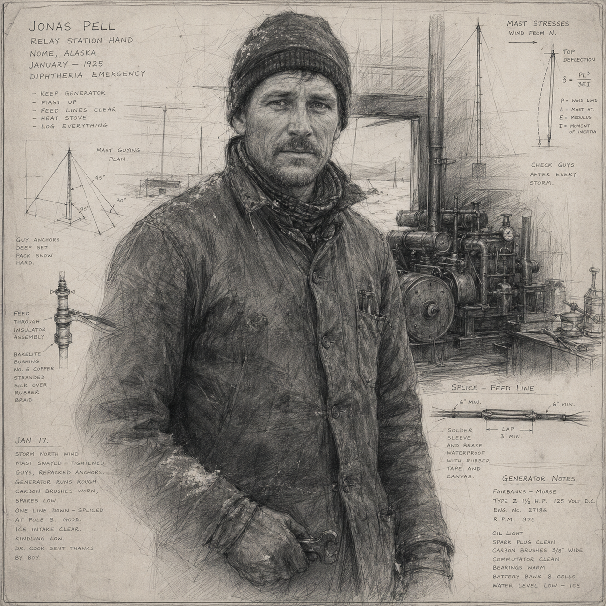
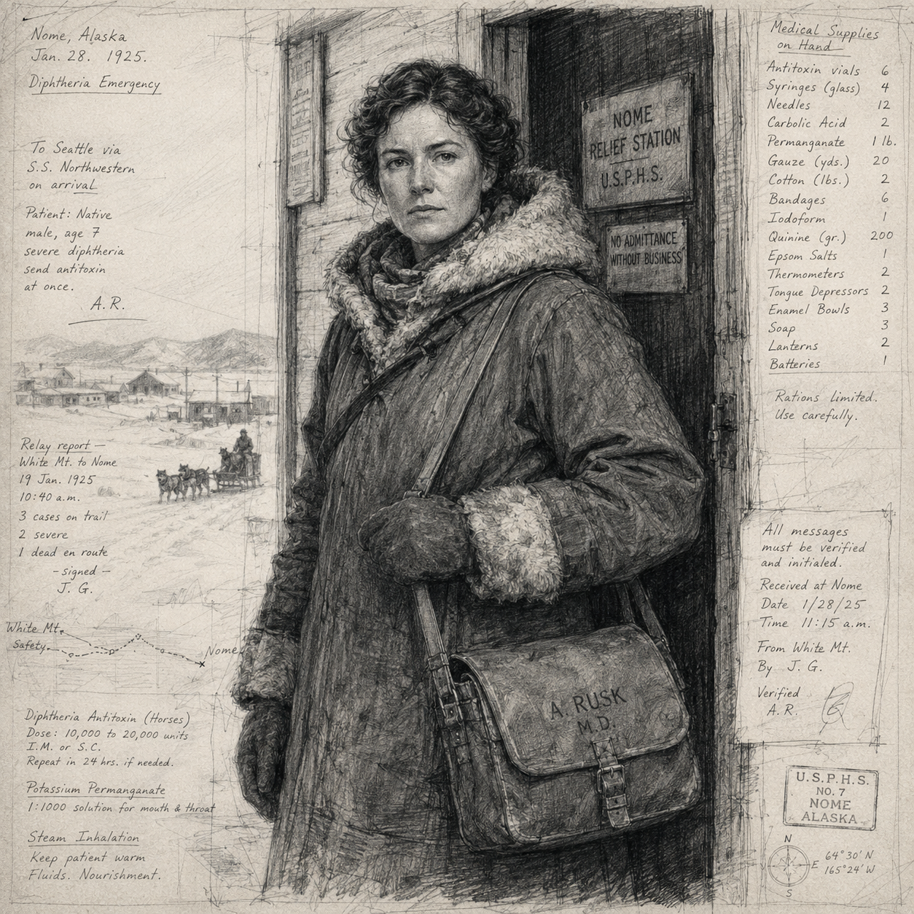
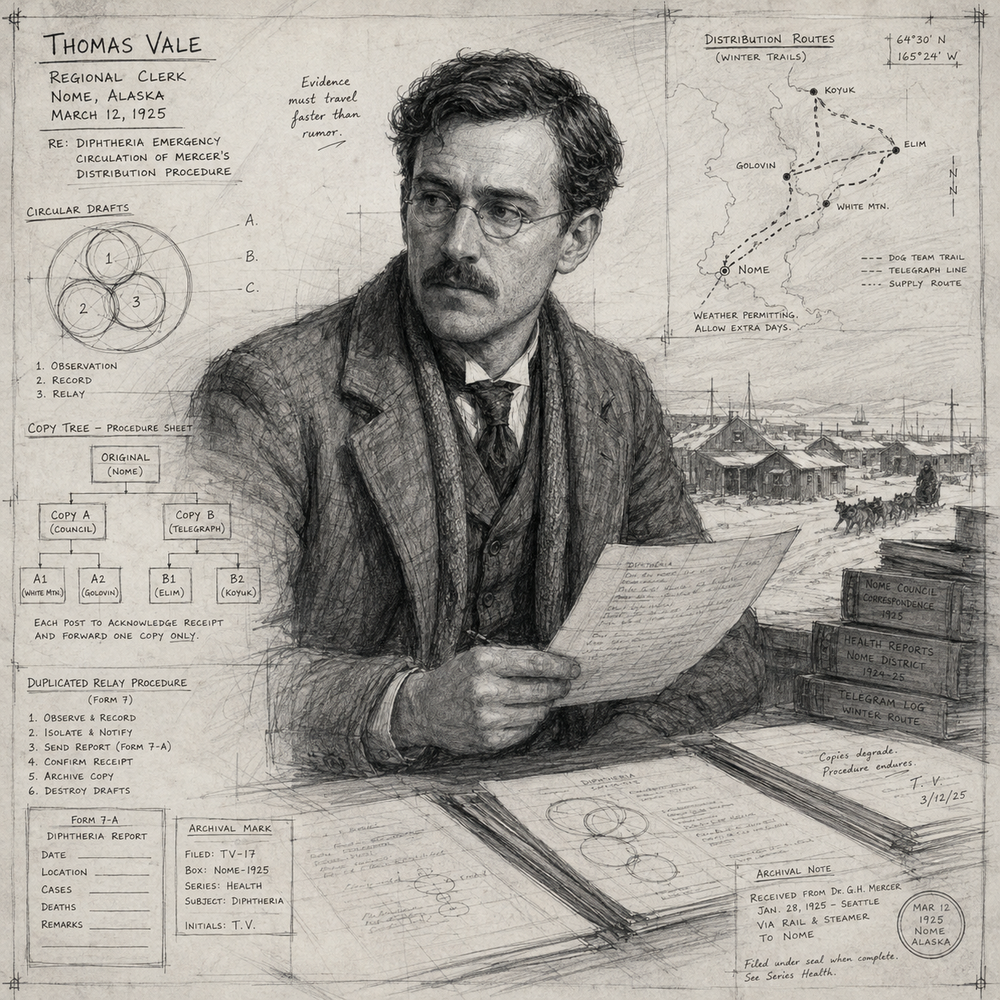
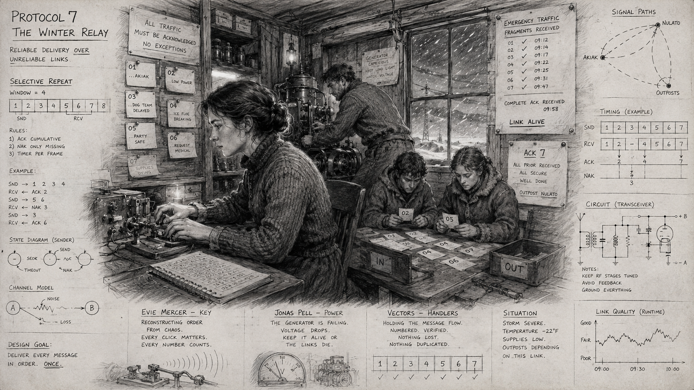
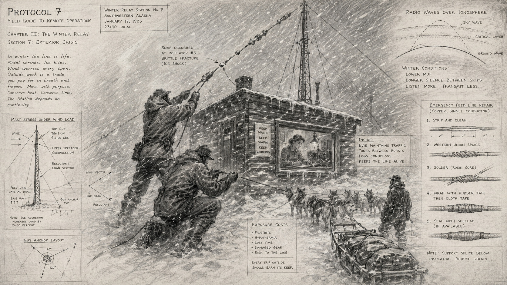

Mission Identity
Location: Alaska Territory · January–February 1925
Required Carrier: A relay protocol that lets urgent medical and engineering information survive broken communications.
Opposition objective: Covenant observer Ruth Vale wants the serum delivered but the standardized protocol destroyed. She argues that Aletheia is breeding institutions trained to obey machine-readable emergency orders.
Mission Parameters
Rules Target: Protocol 7 v0.187 PRE-BETA. Frozen mechanics changed: none. Recommended team: 4–6 Vectors. Play time: two sessions, 6–8 hours. Session One is artifact analysis and planning; Session Two is insertion and verification.
The required Historical Carrier must reach Established. Preferred Exposure is 0–2. Use the canonical Carrier states and four outcomes exactly as written. A failed check changes time, position, witnesses, harm, or Exposure; it never erases the only clue.
The Apocryphon Session
Player Apocryphon: Open "The North-Star Wireless Annual".
Place the complete artifact before the players. Ask every Vector for one literal prediction, one symbolic reading, and one operational precaution. Award a Confirmation Key when a theory is specific enough to test. The artifact contains accurate relationships, misleading literal details, and at least one fact the team will cause. Do not reduce it to one correct answer.
Field Procedure
The decisive objective is a handoff, copy, route, or preservation choice. Opposition has a humane objective in tension with Aletheia, not merely a reason to fight. Future technology is an effective shortcut with a genuine Exposure cost. Every essential conclusion has a physical route, a human route, and a corrected-history route.
Essential Conclusions
- The artifact predicts relationships rather than a fixed script.
- The Carrier survives only when no single person, office, object, or machine owns it.
- The seven-stroke mark is observing restored redundancy and did not originate with the local Covenant cell.
Mission Flow
Begin with a full artifact discussion. Insert amid an immediate public emergency. Let the team discover that literal predictions are incomplete. Give the Covenant a morally credible offer. Force final preservation under a clock. Historical Verification then shows both recognized history and the team’s invisible contribution.
Fifteen-Minute Preparation
- Put the Apocryphon, briefing, and a blank seven-route diagram on the table.
- Choose three local names: one expert, one vulnerable witness, and one official whose caution is reasonable.
- Mark four boxes for the emergency clock and four for the opposition clock.
- Write the team’s strongest Session One theory where everyone can see it.
- Decide which future device would be most tempting in this environment and what evidence it leaves.
- Read the four outcomes before play so failure can branch without improvising a dead end.
Clocks
Emergency Clock
At one box, access narrows. At two, a local route or witness is endangered. At three, the Vectors must choose between the Carrier and an immediate rescue. At four, the famous historical crisis resolves without waiting for them; their remaining task is to salvage a weaker Carrier and limit Exposure.
Opposition Clock
At one box, the Covenant identifies the same Carrier. At two, it recruits or convinces a local ally. At three, it removes one concentrated copy or route. At four, it makes its final offer publicly enough that refusal risks Exposure. Advance this clock for delay, conspicuous technology, coercion, or treating local people as scenery.
Principal Roles
The Local Expert
This person understands the real period problem better than the Vectors. They begin skeptical, become useful when respected, and withdraw if shown contempt or unexplained authority. Their knowledge is a Carrier route, not merely a bonus dispenser.
The Necessary Witness
This person sees the team at the worst possible moment. Silencing them protects Exposure but weakens the human route. Trusting them creates a story history may preserve. Give them a want unrelated to the mission so they remain a person rather than a clue container.
The Cautious Official
The official can grant access, transport, paper, labor, or protection. Their refusal is grounded in limited information and real responsibility. Forgery works quickly; persuasion works cleanly; bypassing them creates a later anomaly file.
The Covenant Advocate
Covenant observer Ruth Vale wants the serum delivered but the standardized protocol destroyed. She argues that Aletheia is breeding institutions trained to obey machine-readable emergency orders. Have the advocate state the strongest version of the objection and demonstrate one act of compassion. The team should be able to hate the proposed remedy without dismissing the diagnosis.
Three-Route Clue Matrix
Conclusion One: the artifact knows this event
- Physical: a material detail, measurement, fold, or registration mark matches the insertion.
- Human: a witness repeats a phrase from the artifact without having seen it.
- Historical: a post-mission record acquires language chosen by the team.
Conclusion Two: redundancy, not possession, creates the Carrier
- Institutional: a legitimate office or durable civic process preserves one incomplete portion.
- Personal: a person teaches or carries a second portion beyond official control.
- Material: an object, repair, map, rubbing, or coded arrangement preserves relationships without the whole secret.
Conclusion Three: the seventh route is external to this operation
- Mark: the seven strokes appear somewhere the team never touched.
- Timing: one correction anticipates a choice made only during play.
- Contradiction: Aletheia and Covenant evidence independently deny authorship while agreeing the anomaly was absent before insertion.
Scene 1 — The silent receiver
Open in motion. Give every Vector one immediate rescue, concealment, or observation opportunity before asking for a roll. The first success earns trust; the first failure advances the emergency clock but also exposes physical evidence matching the Apocryphon.
GM prompt: What will fail next if the Vectors do nothing? Who pays for the fastest solution? Which detail will look completely ordinary in the corrected history?
Scene 2 — Forty below
Put period expertise above future technology. A local witness can solve the practical problem safely; a future device can solve it instantly at +1 Exposure or leave a trace. Ask which cost the team accepts and who is allowed to know the truth.
GM prompt: What will fail next if the Vectors do nothing? Who pays for the fastest solution? Which detail will look completely ordinary in the corrected history?

Evie Mercer

Jonas Pell

Dr. Anna Rusk

Thomas Vale
Scene 3 — A name in the weather column
Split the clue three ways: an object that can be examined, a person who can be persuaded, and a record that can be intercepted. Any two routes establish the conclusion. All three allow the team to act with advantage in position or time, never by changing a frozen rule.
GM prompt: What will fail next if the Vectors do nothing? Who pays for the fastest solution? Which detail will look completely ordinary in the corrected history?
Scene 4 — The Covenant’s humane sabotage
Let the opposition prevent an immediate harm before making its offer. Its proposal genuinely protects someone while weakening the Carrier. If the Vectors refuse, opposition obstructs the route rather than attacking by default. Combat occurs only after a clear escalation.
GM prompt: What will fail next if the Vectors do nothing? Who pays for the fastest solution? Which detail will look completely ordinary in the corrected history?
Scene 5 — The relay without a center

Mercer keeps the signal intelligible while every other system strains.
Force the Carrier/Exposure decision under visible pressure. A clean method takes time, consent, and several independent hands. A fast method concentrates control or uses anachronistic equipment. State both consequences before the team commits.
GM prompt: What will fail next if the Vectors do nothing? Who pays for the fastest solution? Which detail will look completely ordinary in the corrected history?

Outside work costs heat, time, and certainty.
Scene 6 — Historical verification
Extract only after one last question: what ordinary artifact, phrase, repair, or memory remains? During verification, show the recognizable history first, then reveal the team’s contribution in the background. Finally reveal the mark on a different copy than the one they handled.
GM prompt: What will fail next if the Vectors do nothing? Who pays for the fastest solution? Which detail will look completely ordinary in the corrected history?
Environmental Pressure
Use collapsing access, weather, smoke, bureaucracy, corrosion, floodwater, frightened crowds, or temporal instability as active opposition. Announce danger before applying consequences. On failure choose one: separate the team, consume time, endanger a witness, damage a copy, close a route, or raise Exposure. Do not use environmental pressure as automatic damage when a more interesting consequence exists.
Emergency Table
- A local acts first: Their competent intervention saves someone but moves the Carrier away from the team.
- The wrong copy survives: It preserves the function while misidentifying the source.
- Authority arrives: Access improves if the Vectors accept scrutiny; otherwise the clean route closes.
- Future equipment is seen: It works perfectly, and a witness describes it in ordinary period language.
- The Covenant tells the truth: One accusation about Aletheia is verifiable, though the proposed response remains dangerous.
- A seventh person appears: They are absent a moment later. No camera or Vector memory agrees on their face.
Remembered-History Footprint
The team supplies the wording later remembered as the relay’s plain-language rule: never let one broken station become the end of the line. The Vectors never become the credited heroes. They explain an anonymous gap, ordinary phrase, missing copy, unexplained notch, or background figure.
Seventh-Route Evidence
Seven short radio strokes appear in a station log after the team creates a redundant handoff.
Outcomes
Clean Success
Carrier reaches Established or Durable; Exposure is 0–2; the mark appears on an ordinary surviving copy.
Exposed Success
Carrier survives, but a witness, anomaly file, future device, or impossible record becomes available to the Covenant or unknown editor.
Contained Failure
Immediate human harm is mitigated but the Carrier remains Fragile. The next mission gains a compensating task and a visible future weakness.
Exposed Failure
Carrier is lost or corrupted and anomalous evidence survives. Move its function into an expensive later intervention; do not end the Path.
Debrief
- What did you preserve: knowledge, people, institutions, or Aletheia’s preferred future?
- Which shortcut were you unwilling to take?
- Did the Covenant identify a real danger even if its remedy was unacceptable?
- What historical detail do the players recognize, and how did the Vectors enter it?
Record After Play
- Carrier and final strength; final Exposure; outcome category.
- Who survived, died, defected, trusted the Vectors, or became hostile.
- Technology or anomalous evidence left behind.
- Which independent routes now carry the function.
- Exact location and appearance of the seven-stroke mark.
- One ethical disagreement that remained unresolved.
- The ordinary historical footprint and its reserved later payoff.